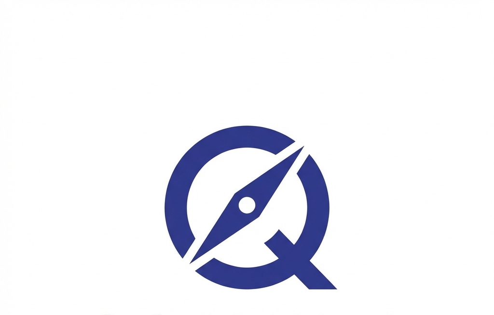
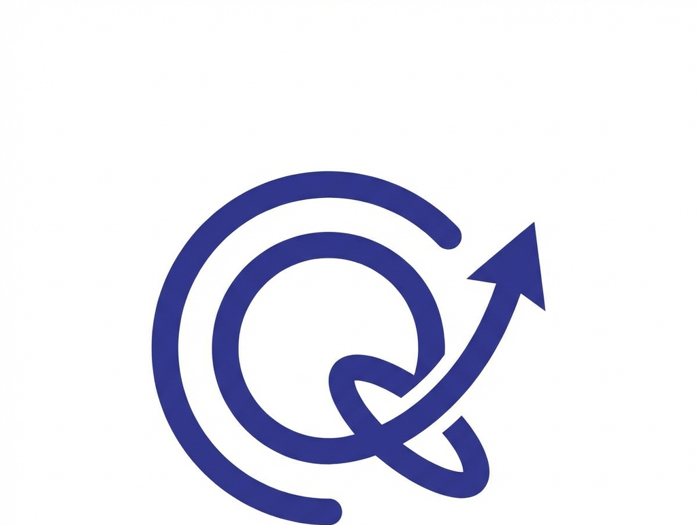
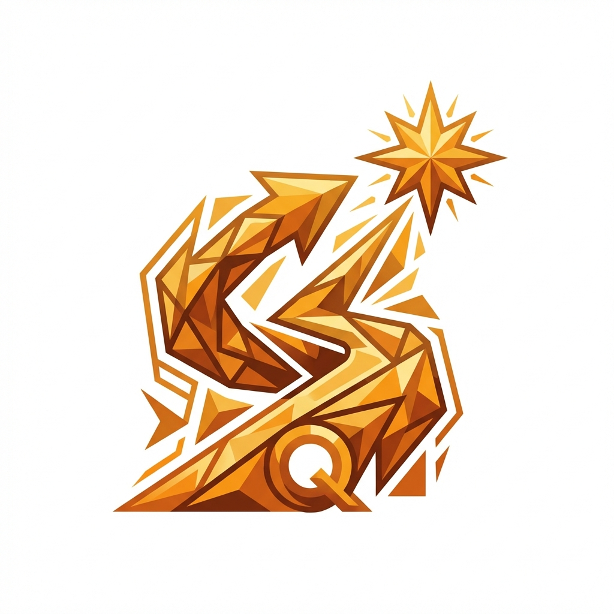
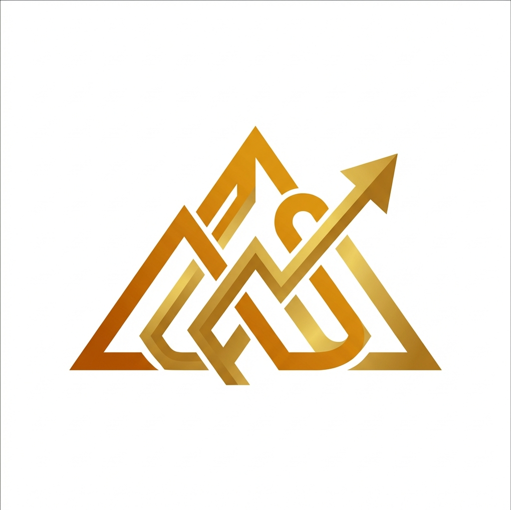
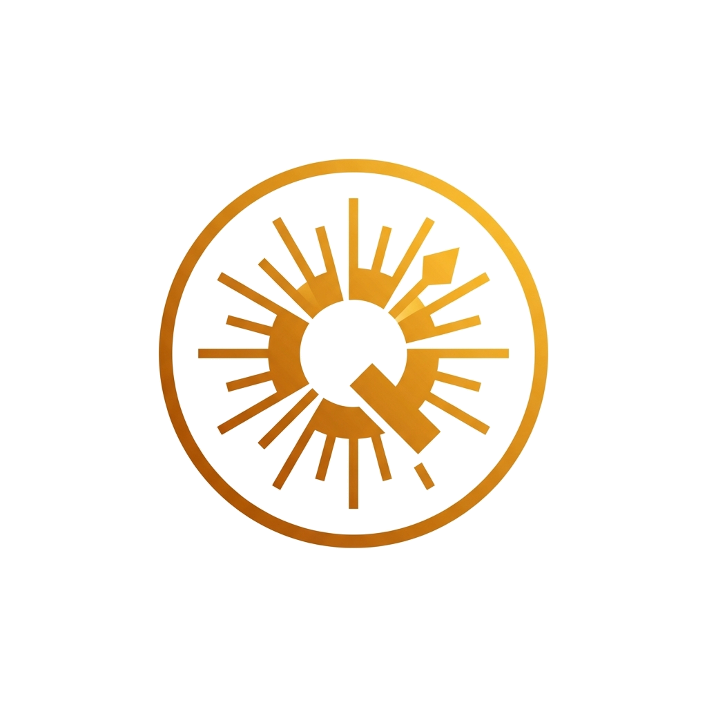

Alege Identitatea Vizuală
Am recreat conceptele în format vectorial premium. Iată cele mai bune 3 direcții pentru brandul tău.
1
Concept #1: Minimalist & Simbolic
Focus pe litera "Q" și metafore vizuale simple (busolă, direcție).

V1:
Compass Q
Votează Varianta 1 ➔

V2:
Modern Path
Votează Varianta 2 ➔
V3:
Rose Compass
Votează Varianta 3 ➔
2
Concept #2: Organic & Uman
Siluete umane, natură, telescoape și explorare.

V1:
Leaf Vision
Votează Varianta 1 ➔

V2:
Climbing Star
Votează Varianta 2 ➔

V3:
Knowledge Tree
Votează Varianta 3 ➔
3
Concept #3: Cosmic & Abstract
Forme geometrice, săgeți și stele care simbolizează succesul.

V1:
Arrow Rise
Votează Varianta 1 ➔

V2:
Golden Peak
Votează Varianta 2 ➔

V3:
Spark Moment
Votează Varianta 3 ➔